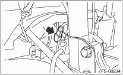

1. Disconnect the ground cable from the battery.
2. Lift-up the vehicle, and remove the front wheels.
3. Disconnect the connector of the front vehicle height sensor. (HID model, right side only)

4. Remove the nuts that hold the front transverse link and the front vehicle height sensor bracket. (HID model, right side only)

5. Remove bolt (A) and clip (B) fixing the front crossmember and the front vehicle height sensor bracket, then remove the front vehicle height sensor assembly. (HID model, right side only)

6. Lift the crimped section of axle nut.
7. Remove the axle nut using a socket wrench while depressing the brake pedal.
CAUTION:
Remove the axle nut while there is no load being applied to the axle. Failure to do so may damage the wheel bearings.
8. Remove the stabilizer link.
9. Remove the disc brake caliper from the housing, and suspend it from strut using a wire.
10. Remove the disc rotor from the hub.
NOTE:
If it is difficult to remove the disc rotor from the hub, drive an 8 mm bolt into the threaded end of rotor, and then remove the rotor.
11. Remove the cotter pin and castle nut securing the tie-rod end to the housing knuckle arm.

|
(A) |
Cotter pin |
|
(B) |
Castle nut |
|
(C) |
Tie-rod |
12. Using a puller, remove the tie-rod ball joint from knuckle arm.
13. Remove the ABS wheel speed sensor assembly and harness.
14. Remove the transverse link ball joint from the housing.
15. Remove the front drive shaft assembly from the hub. If it is hard to remove, use the ST.
| ST1 926470000 | AXLE SHAFT PULLER |
| ST2 28099PA110 | AXLE SHAFT PULLER PLATE |
CAUTION:
Whenever the front drive shaft has been pulled out, always replace the differential side retainer oil seal on the transmission side with a new seal.
16. Hang the front drive shaft on the vehicle body using a wire.
17. After scribing an alignment mark on the camber adjusting bolt head, remove bolts connecting the housing and strut, and disconnect the housing from the strut.